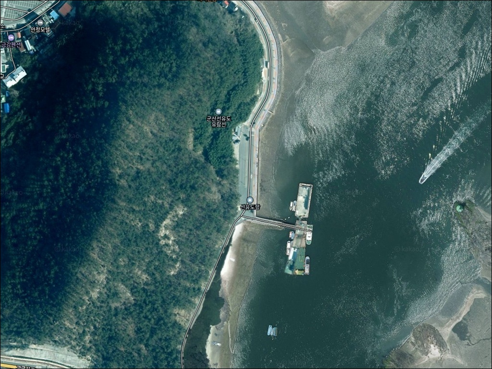
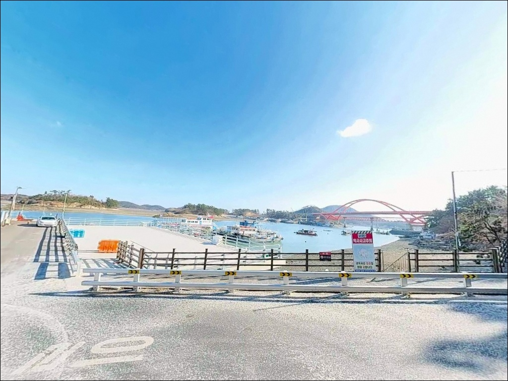
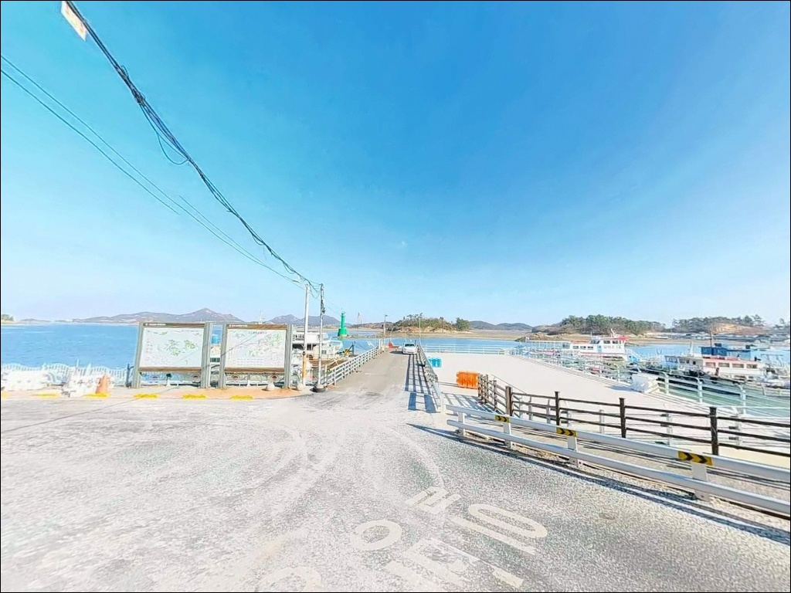
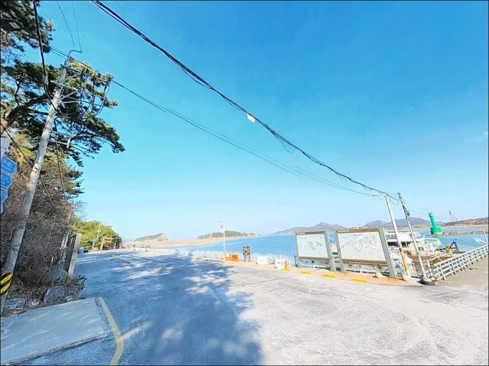
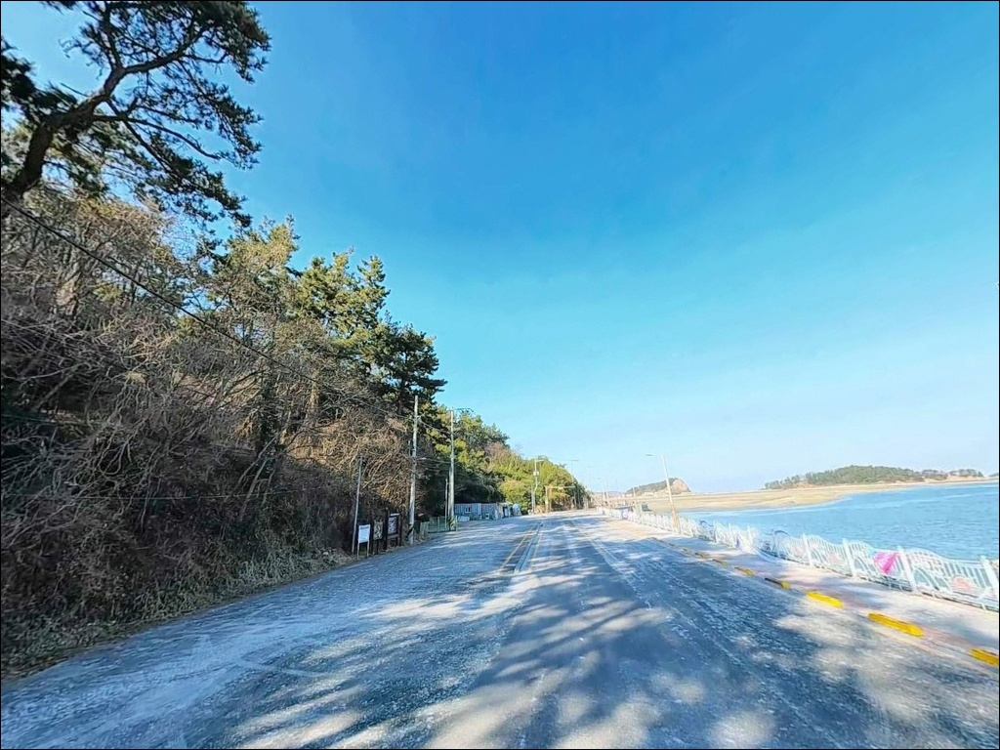
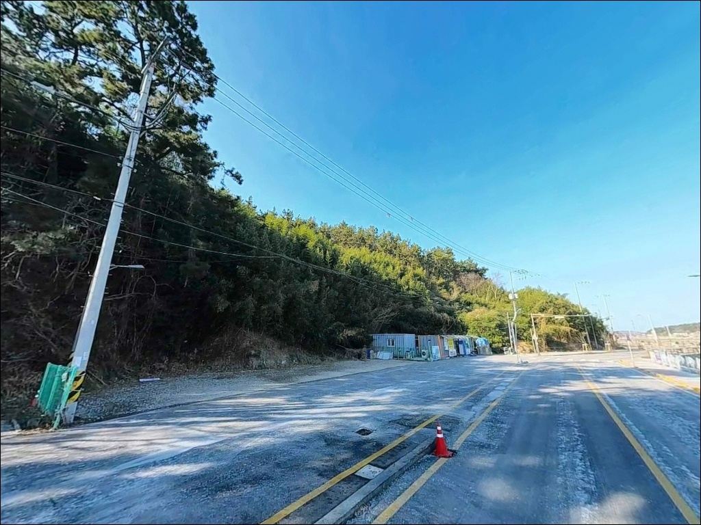
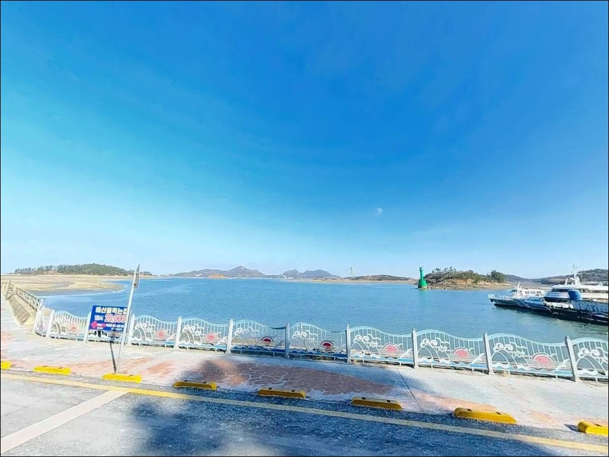
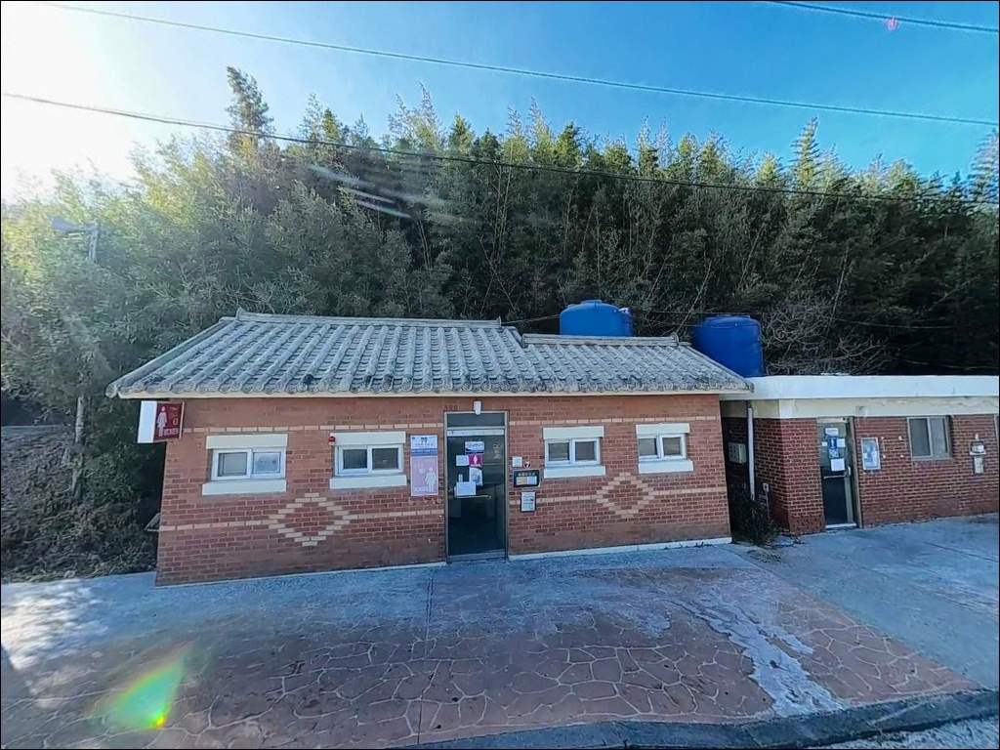
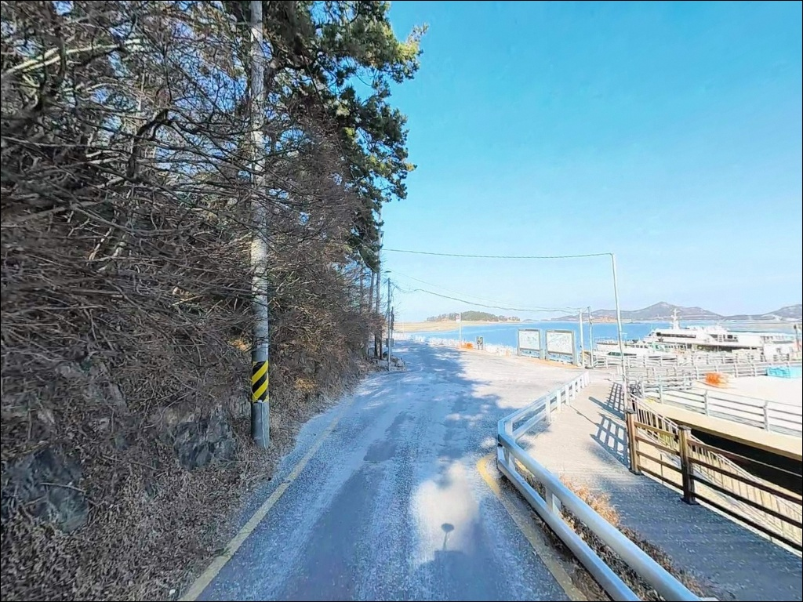

이 페이지에는 광고(제휴 링크 포함)가 있으며, 광고 링크를 통해 구매하면 운영자가 판매 수익 또는 수수료를 받을 수 있습니다. 포인트 사진: 카카오맵 스카이뷰·로드뷰. 이 페이지의 지도·사진 이미지는 카카오맵의 실제 서비스 이미지와 다를 수 있습니다.


선유도항, 선유도 전북 군산시 고요한 수면을 바라보며 차박, 낚시를 즐기기 좋은 해안
포인트 안내
선유도항
전북 군산시 옥도면 선유도리 480
선유도항 낚시에서 가장 흔한 실수는
기도등대 방파제 입구까지
차를 몰고 들어갈 수 있다고 판단하는 것입니다.
쓰레기 문제로 방파제 차량 진입이 금지된 상태라,
공영주차장에 차를 세운 뒤
도보로 이동해야 하는 구조입니다.
현장에 도착해서 이 사실을 처음 알게 되면
짐을 들고 이동하는 동선이 예상보다 길어집니다.
이 글은 선유도항의 진입 동선, 낚시 여건,
물때 판단 기준, 플랜 B 포인트에 집중합니다.
조황 단정이나 특정 어종 보장은
이 글의 범위에 포함되지 않습니다.

1. 진입 동선과 포인트 접근 구조
선유도는 새만금방조제와 고군산대교를 거쳐
육지와 이어지는 섬입니다.
고군산대교 → 무녀도 → 선유대교 순으로 이동하면
선유도리 안쪽까지 차량 접근이 가능한 구조이며,
섬 내부 도로는 포장이 되어 있어
소형차 기준 진입 자체에 큰 어려움은 없습니다.
기도등대 방파제(선유3구) 방향은
선유도 해수욕장을 지나 별도 진입로로 이어집니다.
이 구간이 폭이 좁아 버스나 카라반 차량은
진입이 어려운 구간입니다.
방파제 본체는 차량 진입이 금지되어 있어
낚시를 하려면 공영주차장에 주차한 뒤
도보로 이동하는 것이 기본 동선입니다.
선유도 공영주차장은 331면 규모로
섬 내에서 가장 큰 공영주차장입니다.
오전 9시부터 오후 6시까지 유료로 운영하며,
그 외 시간대는 무료입니다.
성수기에는 이른 시간에도 주차 공간이
빠르게 차는 편이라 여유 있게 도착하는 것이 좋습니다.

2. 차박 환경과 야간 체류 여건
선유도항 주변은 관광지 성격이 강한 공간입니다.
민박·펜션·식당 밀집 구역이
낚시 포인트 주변과 겹쳐 있어
야간에도 어느 정도 사람 왕래가 있는 편입니다.
완전히 조용한 분위기를 기대하기보다
관광지 마을 근처 숙박 대용 정도로
접근하는 것이 현실적입니다.
기도등대 방파제 구간은 외항에 노출된 구조라
바람 영향을 받을 수 있습니다.
방파제 석축 구간은 야간에 미끄러울 수 있어
개인 헤드랜턴은 필수입니다.
공영주차장 기반으로 차박을 구성한다면,
낚시 후 주차장으로 복귀해 쉬는 방식이
이 포인트에 맞는 구성 방식입니다.
성수기에는 주차 공간 자체가
포화 상태에 이르는 경우가 있습니다.
차박을 함께 계획한다면
평일 또는 비성수기 방문이 기본 전제입니다.


3. 주변 편의시설 및 인프라 현황
선유도는 고군산군도의 중심 관광섬으로
섬 내에 식당과 숙박 시설이 다수 있습니다.
마을 내 식당은 운영 중인 곳이 있으나,
이른 아침이나 늦은 저녁에는
운영 여부를 미리 확인하는 편이 좋습니다.
일반 편의점 체인은 섬 특성상 기대하기 어렵고,
마을 내 소규모 가게 수준입니다.
출조 전 식수, 간식, 낚시 소품은
육지에서 미리 챙기는 편이 안전합니다.
응급 상황 발생 시 군산 본토까지
이동하는 데 시간이 걸리는 섬 지역이므로
비상약품과 연료는 넉넉히 준비하는 것이 기본입니다.
선유도어촌체험마을이 운영 중이며
낚시 체험 관련 문의도 가능합니다.

4. 관광지형 포인트에서 놓치기 쉬운 준비사항
선유도항 출조 전 가장 먼저 확인할 것은
물때입니다.
서해는 조석간만의 차가 크고,
고군산군도 일대는 사리 전후
조류가 빠르게 흐르는 지역입니다.
바다타임에서 선유도 기준 물때를 사전에 확인하고
조금 전후 또는 정조 타이밍을 기준으로
출발 시각을 정하는 것이 기본 전략입니다.
기도등대 방파제 외항 석축 구간은
테트라포트 위 낚시보다
방파제 본체나 물양장 구간을 이용하는 것이 안전합니다.
외항 쪽은 파도와 바람에 따라 조건이 빠르게 바뀌므로
기상 예보는 당일 아침 재확인하는 것이 좋습니다.
구명조끼는 방파제 어느 구간에서든 반드시 착용합니다.
외항 석축 주변에서는 밑걸림이 나타날 수 있어
여분 채비를 넉넉히 준비하는 편이 좋습니다.
낚시 후 쓰레기는 직접 수거해
공영주차장 내 분리수거함에 처리하는 것이
이 방파제를 지키는 낚시인의 기본 매너입니다.
기도등대 방파제 차량 진입 금지의 직접적인 원인이
쓰레기 문제였습니다.

5. 지형 기반 낚시 여건 분석
선유도항은 방파제 215m, 물양장 275m로 구성된
지방어항입니다.
방파제 끝단에 자리한 기도등대는
외항과의 경계가 되는 핵심 포인트 구간입니다.
방파제 끝으로 갈수록 수심이 다소 깊어지고
조류 흐름이 형성되는 구조입니다.
외항 쪽은 석축 구조로 되어 있고
말풀이 형성된 구간이 있습니다.
이런 지형에서는 갑오징어와 우럭, 놀래미 등
바닥층과 중층 어종이 머무르기 좋은 조건이 갖춰집니다.
반면 내항 쪽은 정박 어선이 많고
수심이 완만한 편이라
생활낚시 위주 접근이 어울리는 구간입니다.
선착장 주변은 야간에 집어등 효과가 있는 구간으로,
계절에 따라 갈치나 호래기 낚시를
시도해볼 수 있는 조건이 갖춰집니다.
고군산군도 일대 어종은 계절별 편차가 크므로
최신 조황은 출조 전에
'선유도 조황', '선유3구 기도등대 낚시'
키워드로 먼저 검색해 보는 것이 좋습니다.


6. 포인트에 어울리는 낚시 스타일
갑오징어 에깅은 이 포인트에서
가장 활발하게 시도되는 방식입니다.
기도등대 방파제 외항 석축 구간과
말풀 지형은 에기 채비가 힘을 발휘하기 좋은 구조입니다.
내항 쪽에서도 시즌에는 갑오징어 반응이 나오는 편이라,
외항에서 시작해 내항 쪽으로 탐색 범위를 넓히는 방식이
이 포인트 구조에 어울립니다.
주꾸미는 가을 시즌에 집중적으로 노려볼 수 있습니다.
원투낚시도 방파제 구조에 잘 맞습니다.
외항 쪽 수심이 나오는 구간을 향해
채비를 멀리 보내면
우럭, 붕장어(야간), 노래미를 대상으로
운용이 가능합니다.
조류가 느려지는 정조 타이밍이나 조금 전후가
바닥 어종 반응이 올라오는 구간입니다.
야간에는 루어낚시도 시도해볼 만합니다.
방파제 끝단이나 석축 주변에서
농어나 우럭을 대상으로
소형 미노우나 지그헤드 채비를 운용하는 방식입니다.
집어등 효과가 있는 선착장 주변에서는
갈치와 호래기(8월 이후)가
시즌에 반응하는 편입니다.

7. 고군산군도 대안 포인트와 플랜 B 동선
선유도항 조황이 기대에 못 미치거나
주차 여건이 여의치 않다면
장자도항이 가장 가까운 대안입니다.
선유도와 교량으로 연결되어
차량 이동이 바로 가능한 구조이며,
고군산군도 내에서 문어 포인트로 알려진 구간이 있습니다.
발판이 좋아 다양한 낚시 방식으로
운용이 가능한 편입니다.
갑오징어·주꾸미 에깅을 메인으로 준비한 경우라면
무녀도 선착장이 빠른 대안입니다.
선유도 진입 전에 위치해 있어
이동 동선이 효율적이고,
물 흐름이 빠른 포인트로 알려져 있어
에깅 채비에 조류 흐름이 살아나는 구간이 있습니다.
야미도 선착장은 주차 공간이 넓고
낚시가게와 식당이 있어,
선유도에서 소품이 부족하거나
식사 여건이 필요할 때 함께 고려할 수 있는 곳입니다.
무녀도 남단의 만자여·만여는
감성돔 포인트로 알려진 구간이지만
접근 방식을 미리 확인하고 가는 것이 좋습니다.

기도등대 방파제,
준비한 만큼 돌아오는 포인트입니다
물때 확인과 도보 이동 구조를 미리 파악하고 간
낚시인에게 선유도항 기도등대 방파제는
에깅부터 원투낚시까지 복수 방식을 운용할 수 있는
서해 섬 포인트입니다.
관광지 성격이 강한 곳이라
조용한 포인트를 기대하고 간다면 실망할 수 있지만,
방파제 끝단 쪽으로 갈수록
낚시인 위주의 분위기가 형성되는 구조입니다.
성수기 주차 혼잡과 방파제 도보 이동을
감수할 수 있는 낚시인이라면
고군산군도 관광과 낚시를 함께 즐기는
베이스 포인트로 활용이 가능합니다.
장자도, 무녀도 등 주변 섬 포인트를
함께 묶어 반나절씩 돌아보는 방식이
이 권역에서 낚시 효율을 높이는 동선입니다.
차박을 함께 계획한다면
성수기를 피하는 것이 기본 전제이며,
공영주차장 기반으로 낚시와 짧은 체류를 조합하는 방식이
선유도항에서 낚시와 차박을
현실적으로 조합하는 방법입니다.